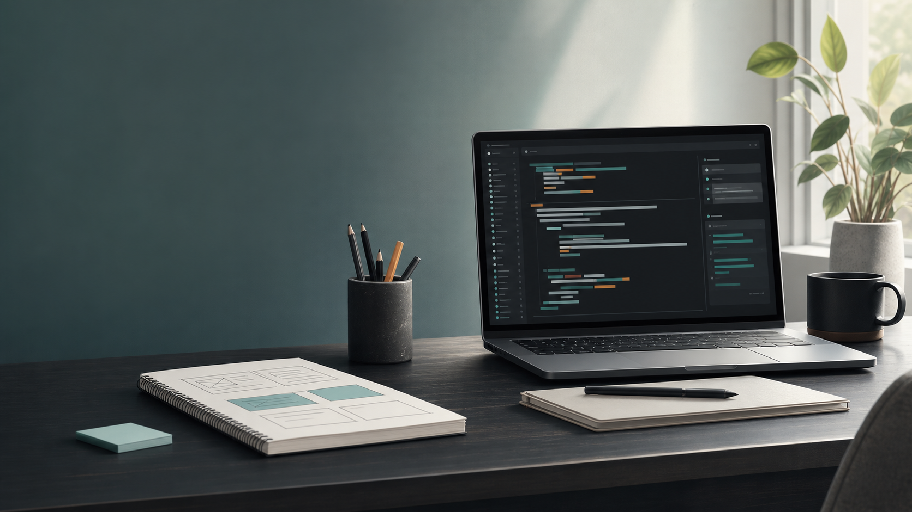

Fast scan for frontend reviewers
The first screens show role focus, skill stack, proof cards, and project filters without forcing visitors through long case-study pages.
See projectsWelcome
Frontend Portfolio
I build clean, responsive web interfaces with a calm visual system and useful interaction details.

Dynamic Web Portfolio
A frontend-focused portfolio for Dinh, shaped around responsive layouts, interface polish, and small dynamic details that make a static GitHub Pages site feel alive.
30-second fit
This version keeps Dinh's work focused on practical web interfaces, responsive layouts, and polished public presentation for frontend or UI opportunities.
The first screens show role focus, skill stack, proof cards, and project filters without forcing visitors through long case-study pages.
See projectsAbout
The copy is intentionally flexible until Dinh's real details are added. The structure is ready for a short bio, stronger project links, a resume, and contact channels without changing the whole page.
Selected work
A personal website that introduces skills, project direction, and contact links in one polished flow.
A conversion-focused page pattern with strong first-screen messaging, clear CTAs, and compact proof sections.
A clean interface concept for viewing tasks, priorities, status, and action states in a compact dashboard layout.
An ecommerce-style grid with predictable spacing, scannable product cards, and mobile-first layout behavior.
Review path
Open with a focused role signal and a polished personal mark.
Summarize why the portfolio matches frontend and UI work.
Show website, interface, and landing page examples only.
Give recruiters or collaborators clear contact paths.
Contact
Replace the placeholders below with Dinh's real email, GitHub, LinkedIn, and resume once the final details are available.